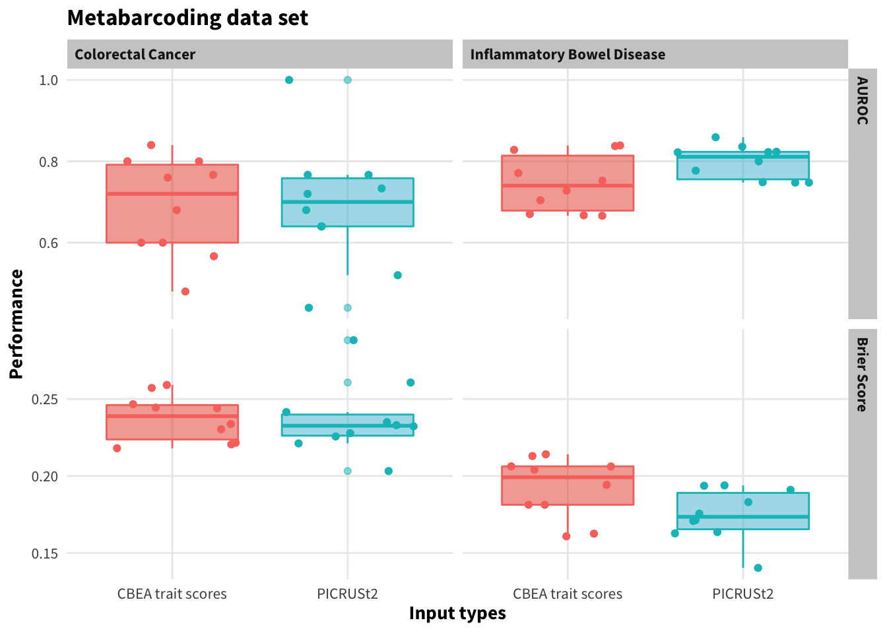
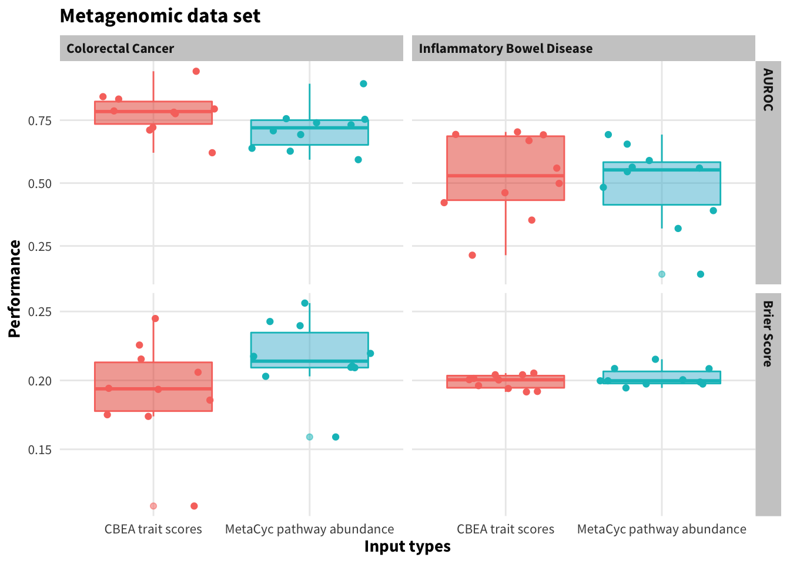
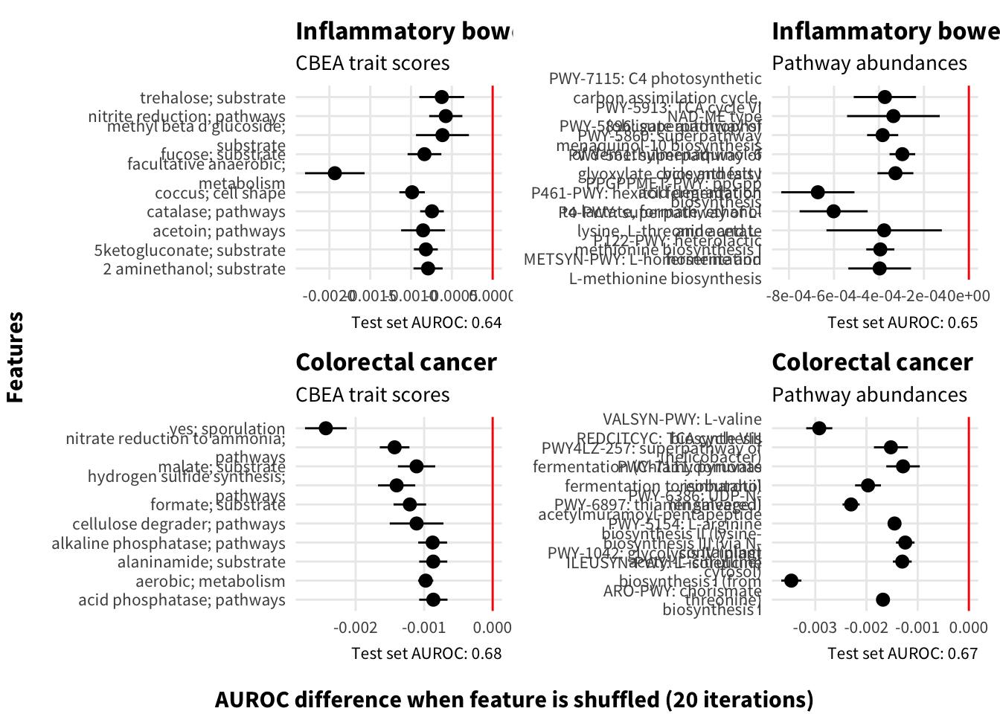
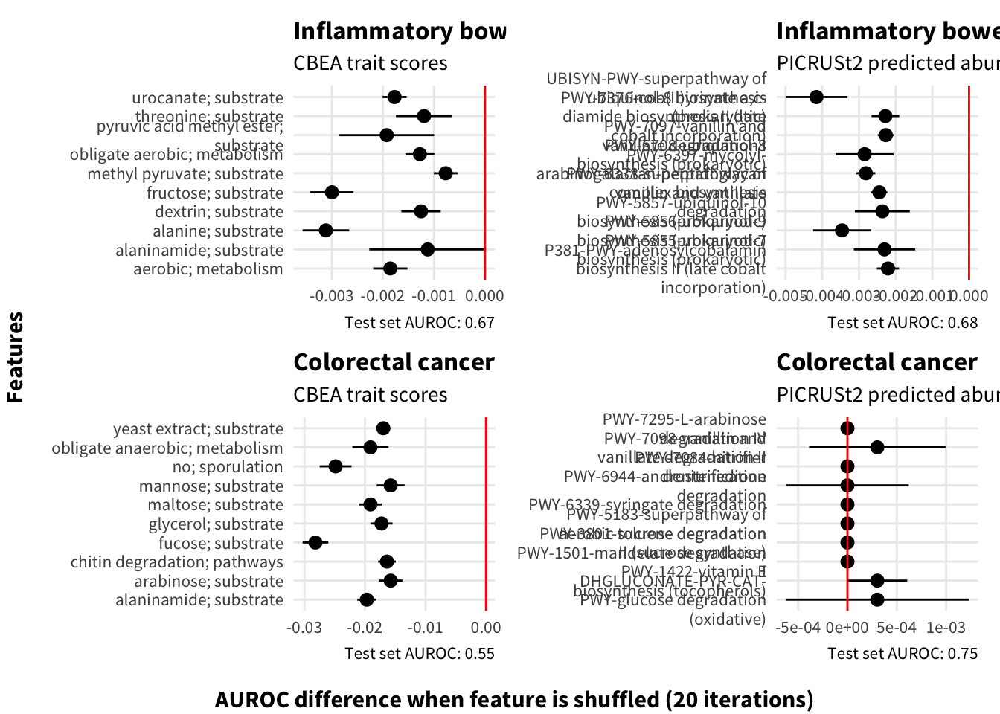

Last updated: 2022-05-06
Checks: 5 2
Knit directory:
~/research/microbe_set_trait/notebooks/
This reproducible R Markdown analysis was created with workflowr (version 1.7.0). The Checks tab describes the reproducibility checks that were applied when the results were created. The Past versions tab lists the development history.
The R Markdown file has unstaged changes. To know which version of
the R Markdown file created these results, you’ll want to first commit
it to the Git repo. If you’re still working on the analysis, you can
ignore this warning. When you’re finished, you can run
wflow_publish to commit the R Markdown file and build the
HTML.
The global environment had objects present when the code in the R
Markdown file was run. These objects can affect the analysis in your R
Markdown file in unknown ways. For reproduciblity it’s best to always
run the code in an empty environment. Use wflow_publish or
wflow_build to ensure that the code is always run in an
empty environment.
The following objects were defined in the global environment when these results were created:
| Name | Class | Size |
|---|---|---|
| owd | character | 168 bytes |
The command set.seed(12345) was run prior to running the
code in the R Markdown file. Setting a seed ensures that any results
that rely on randomness, e.g. subsampling or permutations, are
reproducible.
Great job! Recording the operating system, R version, and package versions is critical for reproducibility.
Nice! There were no cached chunks for this analysis, so you can be confident that you successfully produced the results during this run.
Great job! Using relative paths to the files within your workflowr project makes it easier to run your code on other machines.
Great! You are using Git for version control. Tracking code development and connecting the code version to the results is critical for reproducibility.
The results in this page were generated with repository version d0e3a40. See the Past versions tab to see a history of the changes made to the R Markdown and HTML files.
Note that you need to be careful to ensure that all relevant files for
the analysis have been committed to Git prior to generating the results
(you can use wflow_publish or
wflow_git_commit). workflowr only checks the R Markdown
file, but you know if there are other scripts or data files that it
depends on. Below is the status of the Git repository when the results
were generated:
Ignored files:
Ignored: .DS_Store
Ignored: .Renviron
Ignored: .Rhistory
Ignored: .Rproj.user/
Ignored: .ipynb_checkpoints/
Ignored: .nextflow/
Ignored: .snakemake/
Ignored: .vscode/
Ignored: config/.ipynb_checkpoints/
Ignored: data/.ipynb_checkpoints/
Ignored: gurobi.log
Ignored: large_files/
Ignored: logs/
Ignored: metadata/.ipynb_checkpoints/
Ignored: notebooks/.ipynb_checkpoints/
Ignored: output/sequence_process_16s/crc_16s/exports/.ipynb_checkpoints/
Ignored: output/sequence_process_16s/ibd_16s/exports/.ipynb_checkpoints/
Ignored: output/sets/gurobi.log
Ignored: python/.ipynb_checkpoints/
Ignored: python/data/
Ignored: renv/library/
Ignored: renv/python/
Ignored: renv/staging/
Ignored: workflow/env/.ipynb_checkpoints/
Ignored: workflow/rules/.ipynb_checkpoints/
Untracked files:
Untracked: output/figures/feat_importance_wgs.eps
Untracked: output/figures/feat_importance_wgs.png
Unstaged changes:
Modified: DESCRIPTION
Modified: notebooks/prediction.Rmd
Modified: output/figures/pred_performance.eps
Modified: output/figures/pred_performance.png
Modified: renv.lock
Note that any generated files, e.g. HTML, png, CSS, etc., are not included in this status report because it is ok for generated content to have uncommitted changes.
These are the previous versions of the repository in which changes were
made to the R Markdown (notebooks/prediction.Rmd) and HTML
(docs/prediction.html) files. If you’ve configured a remote
Git repository (see ?wflow_git_remote), click on the
hyperlinks in the table below to view the files as they were in that
past version.
| File | Version | Author | Date | Message |
|---|---|---|---|---|
| Rmd | d0e3a40 | Quang Nguyen | 2022-05-06 | Finalizing coverage images and almost finishing feature importance images |
| Rmd | e6297e0 | Quang Nguyen | 2022-05-04 | Some prediction values and re-generate feature_importance |
library(here)here() starts at /Users/quangnguyen/research/microbe_set_traitlibrary(tidyverse)── Attaching packages ─────────────────────────────────────── tidyverse 1.3.1 ──✓ ggplot2 3.3.5 ✓ purrr 0.3.4
✓ tibble 3.1.6 ✓ dplyr 1.0.8
✓ tidyr 1.2.0 ✓ stringr 1.4.0
✓ readr 2.1.2 ✓ forcats 0.5.1── Conflicts ────────────────────────────────────────── tidyverse_conflicts() ──
x dplyr::filter() masks stats::filter()
x dplyr::lag() masks stats::lag()library(glue)
library(ggsci)
library(patchwork)
source(here("R", "plot_utils.R"))
library(gridExtra)
Attaching package: 'gridExtra'The following object is masked from 'package:dplyr':
combinelibrary(ggpubr)
theme_set(theme_nice())condition <- "crc"
sequencing <- "16s"
files <- list.files(here("output", "pred"), pattern = "results", full.names = TRUE,
include.dirs = FALSE)
df_list <- map(files, ~read_csv(.x) %>% dplyr::select(-1) %>%
mutate(sequencing = as.character(sequencing)))New names:
* `` -> ...1Rows: 10 Columns: 7
── Column specification ────────────────────────────────────────────────────────
Delimiter: ","
chr (2): condition, input_type
dbl (5): ...1, sequencing, fold, brier, roc_auc
ℹ Use `spec()` to retrieve the full column specification for this data.
ℹ Specify the column types or set `show_col_types = FALSE` to quiet this message.
New names:
* `` -> ...1
Rows: 10 Columns: 7
── Column specification ────────────────────────────────────────────────────────
Delimiter: ","
chr (2): condition, input_type
dbl (5): ...1, sequencing, fold, brier, roc_auc
ℹ Use `spec()` to retrieve the full column specification for this data.
ℹ Specify the column types or set `show_col_types = FALSE` to quiet this message.
New names:
* `` -> ...1
Rows: 10 Columns: 7
── Column specification ────────────────────────────────────────────────────────
Delimiter: ","
chr (3): condition, sequencing, input_type
dbl (4): ...1, fold, brier, roc_auc
ℹ Use `spec()` to retrieve the full column specification for this data.
ℹ Specify the column types or set `show_col_types = FALSE` to quiet this message.
New names:
* `` -> ...1
Rows: 10 Columns: 7
── Column specification ────────────────────────────────────────────────────────
Delimiter: ","
chr (3): condition, sequencing, input_type
dbl (4): ...1, fold, brier, roc_auc
ℹ Use `spec()` to retrieve the full column specification for this data.
ℹ Specify the column types or set `show_col_types = FALSE` to quiet this message.
New names:
* `` -> ...1
Rows: 10 Columns: 7
── Column specification ────────────────────────────────────────────────────────
Delimiter: ","
chr (2): condition, input_type
dbl (5): ...1, sequencing, fold, brier, roc_auc
ℹ Use `spec()` to retrieve the full column specification for this data.
ℹ Specify the column types or set `show_col_types = FALSE` to quiet this message.
New names:
* `` -> ...1
Rows: 10 Columns: 7
── Column specification ────────────────────────────────────────────────────────
Delimiter: ","
chr (2): condition, input_type
dbl (5): ...1, sequencing, fold, brier, roc_auc
ℹ Use `spec()` to retrieve the full column specification for this data.
ℹ Specify the column types or set `show_col_types = FALSE` to quiet this message.
New names:
* `` -> ...1
Rows: 10 Columns: 7
── Column specification ────────────────────────────────────────────────────────
Delimiter: ","
chr (3): condition, sequencing, input_type
dbl (4): ...1, fold, brier, roc_auc
ℹ Use `spec()` to retrieve the full column specification for this data.
ℹ Specify the column types or set `show_col_types = FALSE` to quiet this message.
New names:
* `` -> ...1
Rows: 10 Columns: 7
── Column specification ────────────────────────────────────────────────────────
Delimiter: ","
chr (3): condition, sequencing, input_type
dbl (4): ...1, fold, brier, roc_auc
ℹ Use `spec()` to retrieve the full column specification for this data.
ℹ Specify the column types or set `show_col_types = FALSE` to quiet this message.plot_df <- do.call(bind_rows, df_list) %>%
mutate(sequencing = if_else(sequencing == "16", "16s", sequencing)) %>%
pivot_longer(c(brier, roc_auc), names_to = "statistic", values_to = "values") %>%
mutate(input_type = recode(input_type, "picrust2" = "PICRUSt2",
"trait" = "CBEA trait scores",
"pathways" = "MetaCyc pathway abundance"),
statistic = recode(statistic, "brier" = "Brier Score", "roc_auc" = "AUROC"),
condition = recode(condition, "crc" = "Colorectal Cancer", "ibd" = "Inflammatory Bowel Disease"))
(
metabar_plt <- plot_df %>% filter(sequencing == "16s") %>%
ggplot(aes(x = input_type, y = values, col = input_type, fill = input_type)) +
facet_grid(statistic~condition, scales = "free") +
scale_fill_npg() +
geom_boxplot(alpha = 0.5) + geom_jitter() +
labs(x = "Input types", y = "Performance", title = "Metabarcoding data set") +
theme(legend.position = "None")
)
(
wgs_plt <- plot_df %>% filter(sequencing == "wgs") %>%
ggplot(aes(x = input_type, y = values, col = input_type, fill = input_type)) +
facet_grid(statistic~condition, scales = "free") +
scale_fill_npg() +
geom_boxplot(alpha = 0.5) + geom_jitter() +
labs(x = "Input types", y = "Performance", title = "Metagenomic data set") +
theme(legend.position = "None")
)
combo_plot <- metabar_plt / wgs_plt
ggsave(combo_plot, filename = here("output", "figures", "pred_performance.png"), dpi = 300,
width = 8, height = 8)
ggsave(combo_plot, filename = here("output", "figures", "pred_performance.eps"), dpi = 300,
width = 8, height = 8, device = cairo_ps)annotation <- read_delim(file = "https://github.com/picrust/picrust2/raw/master/picrust2/default_files/description_mapfiles/metacyc_pathways_info.txt.gz", delim = "\t", col_names = FALSE)Rows: 2714 Columns: 2
── Column specification ────────────────────────────────────────────────────────
Delimiter: "\t"
chr (2): X1, X2
ℹ Use `spec()` to retrieve the full column specification for this data.
ℹ Specify the column types or set `show_col_types = FALSE` to quiet this message.colnames(annotation) <- c("pathway", "annotation")imp_files <- list.files(here("output", "pred"), pattern = "fimportance", full.names = TRUE)
imp_metadata <- str_split(imp_files, "\\/") %>%
map_dfr(~{
d_vec <- .x[length(.x)] %>%
str_remove("fimportance_") %>%
str_remove(".csv") %>% str_split("_") %>% .[[1]] %>%
recode(
"ibd" = "Inflammatory bowel disease",
"crc" = "Colorectal cancer",
"picrust2" = "PICRUSt2 predicted abundances",
"16s" = "16s rRNA metabarcoding",
"wgs" = "Whole genome metagenomics",
"trait" = "CBEA trait scores",
"pathways" = "Pathway abundances"
)
tibble(
condition = d_vec[1],
seq = d_vec[2],
input = d_vec[3]
)
})
plot_imp_df <- imp_metadata %>% mutate(path = imp_files) %>%
mutate(data = map(path, ~{
imp_df <- read_csv(.x)
imp_df <- imp_df %>% select(-1) %>%
select(-performance) %>%
pivot_longer(everything(), names_to = "pathway") %>%
left_join(annotation) %>%
mutate(full_name = paste(pathway, annotation, sep = "-")) %>%
mutate(full_name = str_remove_all(full_name, "-NA")) %>%
group_by(full_name) %>%
summarise(m = mean(value),
se = sd(value)/sqrt(n())) %>%
arrange(m) %>% slice(1:10) %>%
mutate(u = m + se, l = m - se)
})) %>%
mutate(performance = map_chr(path, ~{
imp_df <- read_csv(.x)
imp_df %>% pull(performance) %>% unique()
})) %>%
unnest(data) %>%
rename("features" = "full_name") %>%
mutate(features = str_replace(features, ";", "; ") %>% str_replace_all("_", " "))New names:
* `` -> ...1Rows: 20 Columns: 13
── Column specification ────────────────────────────────────────────────────────
Delimiter: ","
dbl (13): ...1, PWY-5183, PWY-1501, PWY-6339, PWY-3801, PWY-7084, PWY-7295, ...
ℹ Use `spec()` to retrieve the full column specification for this data.
ℹ Specify the column types or set `show_col_types = FALSE` to quiet this message.
Joining, by = "pathway"
New names:
* `` -> ...1
Rows: 20 Columns: 13
── Column specification ────────────────────────────────────────────────────────
Delimiter: ","
dbl (13): ...1, fucose;substrate, no;sporulation, alaninamide;substrate, obl...
ℹ Use `spec()` to retrieve the full column specification for this data.
ℹ Specify the column types or set `show_col_types = FALSE` to quiet this message.
Joining, by = "pathway"
New names:
* `` -> ...1
Rows: 20 Columns: 13
── Column specification ────────────────────────────────────────────────────────
Delimiter: ","
dbl (13): ...1, ILEUSYN-PWY: L-isoleucine biosynthesis I (from threonine), V...
ℹ Use `spec()` to retrieve the full column specification for this data.
ℹ Specify the column types or set `show_col_types = FALSE` to quiet this message.
Joining, by = "pathway"
New names:
* `` -> ...1
Rows: 20 Columns: 13
── Column specification ────────────────────────────────────────────────────────
Delimiter: ","
dbl (13): ...1, yes;sporulation, nitrate_reduction_to_ammonia;pathways, hydr...
ℹ Use `spec()` to retrieve the full column specification for this data.
ℹ Specify the column types or set `show_col_types = FALSE` to quiet this message.
Joining, by = "pathway"
New names:
* `` -> ...1
Rows: 20 Columns: 13
── Column specification ────────────────────────────────────────────────────────
Delimiter: ","
dbl (13): ...1, UBISYN-PWY, PWY-5856, PWY-6708, PWY-6397, PWY-6338, PWY-5857...
ℹ Use `spec()` to retrieve the full column specification for this data.
ℹ Specify the column types or set `show_col_types = FALSE` to quiet this message.
Joining, by = "pathway"
New names:
* `` -> ...1
Rows: 20 Columns: 13
── Column specification ────────────────────────────────────────────────────────
Delimiter: ","
dbl (13): ...1, alanine;substrate, fructose;substrate, pyruvic_acid_methyl_e...
ℹ Use `spec()` to retrieve the full column specification for this data.
ℹ Specify the column types or set `show_col_types = FALSE` to quiet this message.
Joining, by = "pathway"
New names:
* `` -> ...1
Rows: 20 Columns: 13
── Column specification ────────────────────────────────────────────────────────
Delimiter: ","
dbl (13): ...1, PPGPPMET-PWY: ppGpp biosynthesis, P461-PWY: hexitol fermenta...
ℹ Use `spec()` to retrieve the full column specification for this data.
ℹ Specify the column types or set `show_col_types = FALSE` to quiet this message.
Joining, by = "pathway"
New names:
* `` -> ...1
Rows: 20 Columns: 13
── Column specification ────────────────────────────────────────────────────────
Delimiter: ","
dbl (13): ...1, facultative_anaerobic;metabolism, coccus;cell_shape, acetoin...
ℹ Use `spec()` to retrieve the full column specification for this data.
ℹ Specify the column types or set `show_col_types = FALSE` to quiet this message.
Joining, by = "pathway"
New names:
* `` -> ...1
Rows: 20 Columns: 13
── Column specification ────────────────────────────────────────────────────────
Delimiter: ","
dbl (13): ...1, PWY-5183, PWY-1501, PWY-6339, PWY-3801, PWY-7084, PWY-7295, ...
ℹ Use `spec()` to retrieve the full column specification for this data.
ℹ Specify the column types or set `show_col_types = FALSE` to quiet this message.
New names:
* `` -> ...1
Rows: 20 Columns: 13
── Column specification ────────────────────────────────────────────────────────
Delimiter: ","
dbl (13): ...1, fucose;substrate, no;sporulation, alaninamide;substrate, obl...
ℹ Use `spec()` to retrieve the full column specification for this data.
ℹ Specify the column types or set `show_col_types = FALSE` to quiet this message.
New names:
* `` -> ...1
Rows: 20 Columns: 13
── Column specification ────────────────────────────────────────────────────────
Delimiter: ","
dbl (13): ...1, ILEUSYN-PWY: L-isoleucine biosynthesis I (from threonine), V...
ℹ Use `spec()` to retrieve the full column specification for this data.
ℹ Specify the column types or set `show_col_types = FALSE` to quiet this message.
New names:
* `` -> ...1
Rows: 20 Columns: 13
── Column specification ────────────────────────────────────────────────────────
Delimiter: ","
dbl (13): ...1, yes;sporulation, nitrate_reduction_to_ammonia;pathways, hydr...
ℹ Use `spec()` to retrieve the full column specification for this data.
ℹ Specify the column types or set `show_col_types = FALSE` to quiet this message.
New names:
* `` -> ...1
Rows: 20 Columns: 13
── Column specification ────────────────────────────────────────────────────────
Delimiter: ","
dbl (13): ...1, UBISYN-PWY, PWY-5856, PWY-6708, PWY-6397, PWY-6338, PWY-5857...
ℹ Use `spec()` to retrieve the full column specification for this data.
ℹ Specify the column types or set `show_col_types = FALSE` to quiet this message.
New names:
* `` -> ...1
Rows: 20 Columns: 13
── Column specification ────────────────────────────────────────────────────────
Delimiter: ","
dbl (13): ...1, alanine;substrate, fructose;substrate, pyruvic_acid_methyl_e...
ℹ Use `spec()` to retrieve the full column specification for this data.
ℹ Specify the column types or set `show_col_types = FALSE` to quiet this message.
New names:
* `` -> ...1
Rows: 20 Columns: 13
── Column specification ────────────────────────────────────────────────────────
Delimiter: ","
dbl (13): ...1, PPGPPMET-PWY: ppGpp biosynthesis, P461-PWY: hexitol fermenta...
ℹ Use `spec()` to retrieve the full column specification for this data.
ℹ Specify the column types or set `show_col_types = FALSE` to quiet this message.
New names:
* `` -> ...1
Rows: 20 Columns: 13
── Column specification ────────────────────────────────────────────────────────
Delimiter: ","
dbl (13): ...1, facultative_anaerobic;metabolism, coccus;cell_shape, acetoin...
ℹ Use `spec()` to retrieve the full column specification for this data.
ℹ Specify the column types or set `show_col_types = FALSE` to quiet this message.wgs_imp <- plot_imp_df %>% filter(seq == "Whole genome metagenomics")
plot_grid <- cross_df(list(
ipt = c("CBEA trait scores", "Pathway abundances"),
cond = c("Inflammatory bowel disease", "Colorectal cancer")
))
plots_list <- pmap(plot_grid, function(ipt, cond, ...){
pltdf <- wgs_imp %>% filter(condition == {{ cond }},
input == {{ ipt }})
perf <- pltdf %>% pull(performance) %>% unique() %>% as.numeric()
out <- ggplot(pltdf,
aes(x = str_wrap(features, width = 30), y = m)) +
geom_pointrange(aes(ymin = l, ymax = u)) +
coord_flip() +
labs(y = "AUROC increase when feature is shuffled (20 iterations)",
x = "Features",
title = glue("{cond}", cond = cond, ipt = ipt),
caption = glue("Test set AUROC: {perf}",
perf = round(perf, digits = 2)),
subtitle = glue("{ipt}", ipt = ipt)) +
theme(legend.position = "none", axis.title = element_blank()) +
geom_hline(aes(yintercept = 0), col = "red")
return(out)
})
gt <- patchwork::patchworkGrob(Reduce("+", plots_list))
x_axis <- text_grob("Features", family = "Source Sans Pro", face = "bold",rot = 90)
y_axis <- text_grob("AUROC difference when feature is shuffled (20 iterations)",
family = "Source Sans Pro", face = "bold")
feat_importance_wgs <- gridExtra::grid.arrange(gt, left = x_axis,
bottom = y_axis)
ggsave(feat_importance_wgs,
filename = here("output", "figures", "feat_importance_wgs.png"),
width = 10, height = 11)
ggsave(feat_importance_wgs,
filename = here("output", "figures", "feat_importance_wgs.eps"),
width = 10, height = 11, device = cairo_ps)metabar_imp <- plot_imp_df %>% filter(seq == "16s rRNA metabarcoding")
plot_grid <- cross_df(list(
ipt = c("CBEA trait scores", "PICRUSt2 predicted abundances"),
cond = c("Inflammatory bowel disease", "Colorectal cancer")
))
plots_list <- pmap(plot_grid, function(ipt, cond, ...){
pltdf <- metabar_imp %>% filter(condition == {{ cond }},
input == {{ ipt }})
print(head(pltdf))
perf <- pltdf %>% pull(performance) %>% unique() %>% as.numeric()
out <- ggplot(pltdf,
aes(x = str_wrap(features, width = 30), y = m)) +
geom_pointrange(aes(ymin = l, ymax = u)) +
coord_flip() +
labs(y = "AUROC increase when feature is shuffled (20 iterations)",
x = "Features",
title = glue("{cond}", cond = cond, ipt = ipt),
caption = glue("Test set AUROC: {perf}",
perf = round(perf, digits = 2)),
subtitle = glue("{ipt}", ipt = ipt)) +
theme(legend.position = "none", axis.title = element_blank()) +
geom_hline(aes(yintercept = 0), col = "red")
return(out)
})# A tibble: 6 × 10
condition seq input path features m se u l
<chr> <chr> <chr> <chr> <chr> <dbl> <dbl> <dbl> <dbl>
1 Inflammatory bo… 16s … CBEA… /Use… alanine… -0.00312 4.57e-4 -2.66e-3 -0.00357
2 Inflammatory bo… 16s … CBEA… /Use… fructos… -0.00300 4.24e-4 -2.58e-3 -0.00342
3 Inflammatory bo… 16s … CBEA… /Use… pyruvic… -0.00193 9.29e-4 -9.97e-4 -0.00285
4 Inflammatory bo… 16s … CBEA… /Use… aerobic… -0.00185 3.36e-4 -1.52e-3 -0.00219
5 Inflammatory bo… 16s … CBEA… /Use… urocana… -0.00177 2.35e-4 -1.54e-3 -0.00201
6 Inflammatory bo… 16s … CBEA… /Use… obligat… -0.00128 2.84e-4 -9.92e-4 -0.00156
# … with 1 more variable: performance <chr>
# A tibble: 6 × 10
condition seq input path features m se u l
<chr> <chr> <chr> <chr> <chr> <dbl> <dbl> <dbl> <dbl>
1 Inflammatory bo… 16s … PICR… /Use… UBISYN-… -0.00416 8.41e-4 -0.00332 -0.00500
2 Inflammatory bo… 16s … PICR… /Use… PWY-585… -0.00346 7.88e-4 -0.00267 -0.00425
3 Inflammatory bo… 16s … PICR… /Use… PWY-670… -0.00285 7.88e-4 -0.00206 -0.00363
4 Inflammatory bo… 16s … PICR… /Use… PWY-639… -0.00281 2.59e-4 -0.00255 -0.00307
5 Inflammatory bo… 16s … PICR… /Use… PWY-633… -0.00245 2.18e-4 -0.00223 -0.00266
6 Inflammatory bo… 16s … PICR… /Use… PWY-585… -0.00236 7.48e-4 -0.00161 -0.00311
# … with 1 more variable: performance <chr>
# A tibble: 6 × 10
condition seq input path features m se u l
<chr> <chr> <chr> <chr> <chr> <dbl> <dbl> <dbl> <dbl>
1 Colorectal cancer 16s rR… CBEA… /Use… fucose;… -0.0282 0.00212 -0.0261 -0.0303
2 Colorectal cancer 16s rR… CBEA… /Use… no; spo… -0.0248 0.00263 -0.0222 -0.0275
3 Colorectal cancer 16s rR… CBEA… /Use… alanina… -0.0197 0.00158 -0.0181 -0.0213
4 Colorectal cancer 16s rR… CBEA… /Use… obligat… -0.0191 0.00299 -0.0161 -0.0221
5 Colorectal cancer 16s rR… CBEA… /Use… maltose… -0.0191 0.00188 -0.0172 -0.0210
6 Colorectal cancer 16s rR… CBEA… /Use… glycero… -0.0173 0.00183 -0.0154 -0.0191
# … with 1 more variable: performance <chr>
# A tibble: 6 × 10
condition seq input path features m se u l performance
<chr> <chr> <chr> <chr> <chr> <dbl> <dbl> <dbl> <dbl> <chr>
1 Colorectal can… 16s … PICR… /Use… PWY-150… 0 0 0 0 0.751515
2 Colorectal can… 16s … PICR… /Use… PWY-380… 0 0 0 0 0.751515
3 Colorectal can… 16s … PICR… /Use… PWY-518… 0 0 0 0 0.751515
4 Colorectal can… 16s … PICR… /Use… PWY-633… 0 0 0 0 0.751515
5 Colorectal can… 16s … PICR… /Use… PWY-708… 0 0 0 0 0.751515
6 Colorectal can… 16s … PICR… /Use… PWY-729… 0 0 0 0 0.751515 gt <- patchwork::patchworkGrob(Reduce("+", plots_list))
x_axis <- text_grob("Features", family = "Source Sans Pro", face = "bold",rot = 90)
y_axis <- text_grob("AUROC difference when feature is shuffled (20 iterations)",
family = "Source Sans Pro", face = "bold")
feat_importance_16s <- gridExtra::grid.arrange(gt, left = x_axis,
bottom = y_axis)
ggsave(feat_importance_16s,
filename = here("output", "figures", "feat_importance_16s.png"),
width = 10, height = 11)
ggsave(feat_importance_16s,
filename = here("output", "figures", "feat_importance_16s.eps"),
width = 10, height = 11, device = cairo_ps)if (Sys.info()["sysname"] == "Darwin"){
path_to <- "../../microbe_trait_manuscript/bmc_template/figures/"
}
file.copy(Sys.glob(here("output", "figures", "*.eps")),
to = path_to,
recursive = TRUE, overwrite = TRUE)[1] TRUE TRUE TRUE TRUE TRUE TRUE TRUE TRUEfile.copy(Sys.glob(here("output", "figures", "*.png")),
to = path_to,
recursive = TRUE, overwrite = TRUE)[1] TRUE TRUE TRUE TRUE TRUE TRUE TRUE TRUE
sessionInfo()R version 4.1.2 (2021-11-01)
Platform: x86_64-apple-darwin17.0 (64-bit)
Running under: macOS Big Sur 10.16
Matrix products: default
BLAS: /Library/Frameworks/R.framework/Versions/4.1/Resources/lib/libRblas.0.dylib
LAPACK: /Library/Frameworks/R.framework/Versions/4.1/Resources/lib/libRlapack.dylib
locale:
[1] en_US.UTF-8/en_US.UTF-8/en_US.UTF-8/C/en_US.UTF-8/en_US.UTF-8
attached base packages:
[1] stats graphics grDevices datasets utils methods base
other attached packages:
[1] ggpubr_0.4.0 gridExtra_2.3 patchwork_1.1.1 ggsci_2.9
[5] glue_1.6.2 forcats_0.5.1 stringr_1.4.0 dplyr_1.0.8
[9] purrr_0.3.4 readr_2.1.2 tidyr_1.2.0 tibble_3.1.6
[13] ggplot2_3.3.5 tidyverse_1.3.1 here_1.0.1
loaded via a namespace (and not attached):
[1] fs_1.5.2 lubridate_1.8.0 bit64_4.0.5
[4] httr_1.4.2 rprojroot_2.0.2 tools_4.1.2
[7] backports_1.4.1 bslib_0.3.1 utf8_1.2.2
[10] R6_2.5.1 DBI_1.1.2 colorspace_2.0-3
[13] withr_2.5.0 tidyselect_1.1.2 bit_4.0.4
[16] curl_4.3.2 compiler_4.1.2 git2r_0.30.1
[19] cli_3.2.0 rvest_1.0.2 xml2_1.3.3
[22] labeling_0.4.2 sass_0.4.0 scales_1.1.1
[25] digest_0.6.29 rmarkdown_2.14 pkgconfig_2.0.3
[28] htmltools_0.5.2 dbplyr_2.1.1 fastmap_1.1.0
[31] highr_0.9 rlang_1.0.2 readxl_1.3.1
[34] rstudioapi_0.13 jquerylib_0.1.4 generics_0.1.2
[37] farver_2.1.0 jsonlite_1.8.0 vroom_1.5.7
[40] car_3.0-13 magrittr_2.0.3 Rcpp_1.0.8
[43] munsell_0.5.0 fansi_1.0.2 abind_1.4-5
[46] lifecycle_1.0.1 stringi_1.7.6 whisker_0.4
[49] yaml_2.3.5 carData_3.0-5 grid_4.1.2
[52] parallel_4.1.2 promises_1.2.0.1 crayon_1.5.0
[55] haven_2.4.3 hms_1.1.1 knitr_1.37
[58] pillar_1.7.0 ggsignif_0.6.3 reprex_2.0.1
[61] evaluate_0.15 renv_0.15.4 BiocManager_1.30.16
[64] modelr_0.1.8 vctrs_0.3.8 tzdb_0.2.0
[67] httpuv_1.6.5 cellranger_1.1.0 gtable_0.3.0
[70] assertthat_0.2.1 xfun_0.30 broom_0.7.12
[73] rstatix_0.7.0 later_1.3.0 workflowr_1.7.0
[76] ellipsis_0.3.2